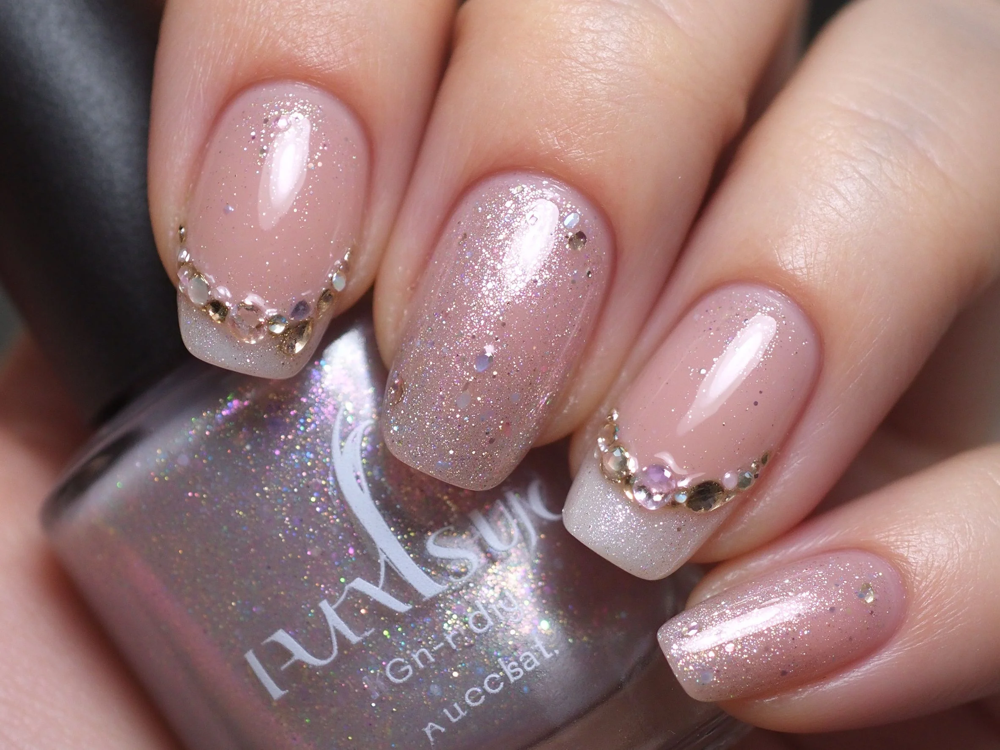

認識凝膠是什麼：入門快速導讀
凝膠是塗上去、照燈就變硬的凝膠狀樹脂，比指甲油持久、比水晶好上手，是現在美甲的主流。
凝膠是什麼的原理與辨識重點：照燈才硬
它不是『指甲油』也不是『粉＋液體』。凝膠是一罐黏稠的樹脂，塗上指甲後用紫外光或 LED 光一照，裡面的分子開始互相咬合，幾十秒就從軟軟黏黏變成硬硬的『第二層甲』。因為它要靠光才固化，所以叫『光療凝膠』，也有人直接叫『光療』。
誰適合做凝膠是什麼？新手第一問
想要顏色持久、又不想一直補的人最適合；第一次做美甲的新手也很推，因為它比水晶的氣味和技術門檻低很多。
凝膠是什麼施作步驟：紫外光固化樹脂
前置（修型、推甘皮、輕磨甲面）→ 上薄薄一層底膠照燈 → 上色膠兩到三層，每層照燈 → 上封層照燈 → 擦去殘膠。重點是『每一層都要薄』，薄才照得透、才不縮膠。
凝膠是什麼優點與缺點分析
| 面向 | 說明 |
|---|---|
| 好上手 | 入門階段就能掌握，是日系流派的入門招牌 |
| 辨識度高 | 靠「照燈才硬」一眼認得出，成品是光療凝膠 |
| 變化多 | 可延伸出多種「新手第一問」的變化款 |
| 注意 | 「照燈才硬」與包邊沒顧好，持久度會打折 |

凝膠是什麼新手雷區：一層一層薄上
注意：最常見的翻車是『貪厚』：一次塗厚厚一層，燈照不透，裡面永遠軟軟的，隔兩天就整片掀起。記住：薄層、多次、每層都照夠。
凝膠是什麼和相似做法的差別
凝膠是什麼最常被拿來和「光療燈原理、凝膠指甲油」搞混。簡單分：凝膠是什麼更執著在「照燈才硬」這一個細節上，而隔壁那幾種把重點放在別的地方——同一個美甲領域、不同的側重點，看多了自然分得開。
凝膠是什麼常見問題 FAQ
Q：凝膠和指甲油差在哪？ A：指甲油靠揮發乾掉，凝膠靠光照固化。凝膠更硬、更亮、更持久，但要照燈而且要卸；指甲油方便，卻容易掉色、易刮花。
Q：做凝膠會不會傷指甲？ A：正確前置只做『輕磨』，不會傷。會傷多半是卸甲時硬摳、或太頻繁卸甲。好好卸、別摳，指甲能一直維持健康。
Q：凝膠一定要照燈嗎？ A：要。它靠光才固化，不照燈就永遠黏黏的。燈要用對波長，LED 膠配 LED 燈、UV 膠配 UV 燈才照得乾。